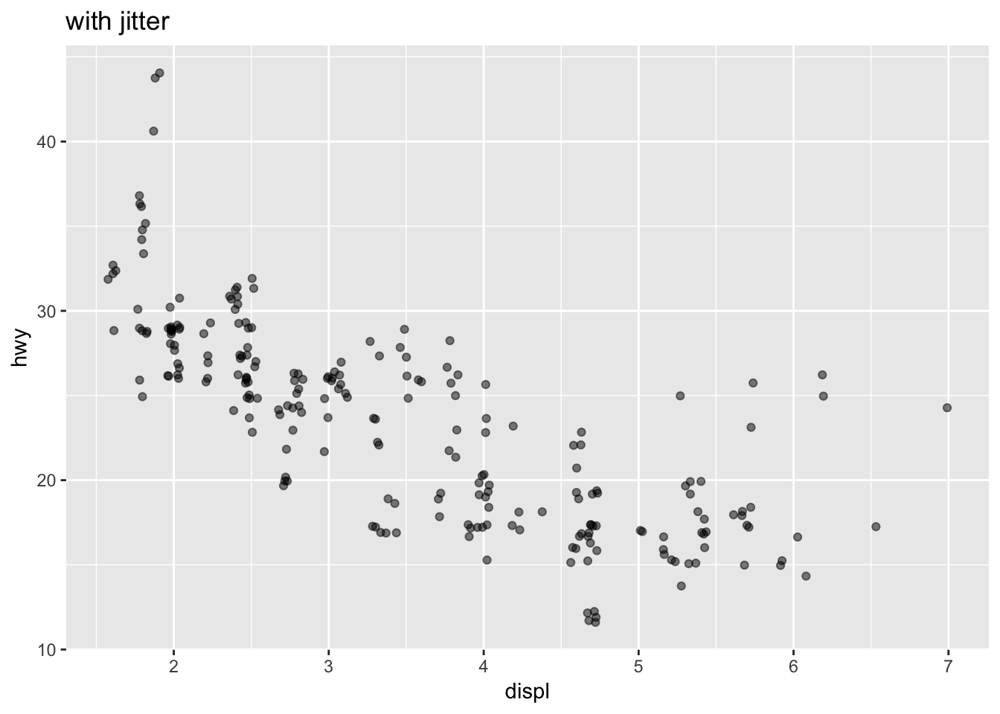

Chapter 2 Introduction to ggplot2
“The simple graph has brought more information to the data analyst’s mind athan any other device.”
— John Tukey
2.1 Overview
R has several systems for data visualisation, and ggplot2 is arguably the most elegant and versatile visualisation package, which implements the grammar of graphics theory.
2.2 tidyverse package
tidyverse is a collection of R packages designed for data science, which includes ggplot2 package for plotting and dplyr package for data wrangling.
Install the latest tidyverse package and loading the package
# Install if you have not install, or to update the pacakge
install.packages("tidyverse")# Load the package
library(tidyverse)# We will use this dataset for this section
mpg## # A tibble: 234 x 11
## manufacturer model displ year cyl trans drv cty hwy fl cla…
## <chr> <chr> <dbl> <int> <int> <chr> <chr> <int> <int> <chr> <ch>
## 1 audi a4 1.8 1999 4 auto… f 18 29 p com…
## 2 audi a4 1.8 1999 4 manu… f 21 29 p com…
## 3 audi a4 2 2008 4 manu… f 20 31 p com…
## 4 audi a4 2 2008 4 auto… f 21 30 p com…
## 5 audi a4 2.8 1999 6 auto… f 16 26 p com…
## 6 audi a4 2.8 1999 6 manu… f 18 26 p com…
## 7 audi a4 3.1 2008 6 auto… f 18 27 p com…
## 8 audi a4 q… 1.8 1999 4 manu… 4 18 26 p com…
## 9 audi a4 q… 1.8 1999 4 auto… 4 16 25 p com…
## 10 audi a4 q… 2 2008 4 manu… 4 20 28 p com…
## # ... with 224 more rows-
Look up a vignette for the
tidyversepackage. -
Find additional documentation on
mpgdataset to learn more about the dataset.
2.3 ggplot2 package
Now that you have a better understanding of mpg dataset,let’s start with a simple question/hypothesis: Do casrs with big engines use more feul than cars with small engignes? You may already have a hunch to answer this question, but what do you think the relationship between engine size and fuel efficiency is like? It is a linear or non-linear function?
-
Look up which variable is for car’s engine size in
mpgdataset. -
Look up which variable is for car’s fuel efficiency in
mpgdataset.
2.3.1 qplot()
ggplot2 comes with a function called qplot(), which is quivalent to the base plot() function. It is a convenient wrapper for creating a number of different types plots using a consistent calling scheme, but since this is a data visualization course, we will stick with ggplot() as it allows you to choose visual channels to create more complex graphics.
2.3.2 ggplot()
Let’s start creating a scatter plot with displ on the x-axis and hwy on the y-axis to explore the relationship between the engine size and the fuel efficiency.
ggplot(data = mpg) +
geom_point(mapping = aes(x = displ, y = hwy))The graph above shows a negative relationship between engine size and fuel efficiency, suggeting that cars with bitter engines tend to use more fuel.
To create a plot with ggplot2, you follow these steps:
ggplot()creates a coordinate system that you can add layers ofgeom(geometric object) to. The first argument ofggplot()is the data table to use in the graph. Thus,ggplot(data = mpg)create an empty graph, just pointing to the data source for plotting.To actually plot something, you need to choose a visual channel, called
geominggplot2term. The functiongeom_point()adds a geom layer of points to your graph, resulting a scatterplot. There are manygeomfunctions and eachgeomfunction takes amappingargument, in which you define the data mapping. Themappingargument is always paired withaes(). In this example,xandyarguments ofaes()specify which variables to mapt to the x and y axes.
In summary, a template looks like this:
ggplot(data = <DATA>) +
<GEOM_FUNCTION>(mapping = aes(<MAPPINGS>))I find this ggplot2 cheat sheet from RStudio very helpful to have this print out laying around on my desk while doing exploratory data analysis.
-
Run
ggplot(data = mpg). What do you see? -
How many rows are in
mpg? How many columns/variables? -
What does the
drvvariable describe? -
Make a scatterplot of
hwyon x-axis andcylon y-axis. -
Make a scatter plot of
classvsdrv. Why is the plot not very useful?
(Wickham and Grolemund 2016)
2.4 Visual analytics - Intro
Let’s have a closer look at the graph you generated above. It looks liek one group of points highlighted in red seem to fall out of the linear trend. These cars have relatively large engine size (displ) and higher fuel efficiency (hwy) than you might expect.
- Think about why this may be.
-
Look up
?mpgto see what other variables you may consider to address your hypothesis
If you look up ?mpg, you see a variable called class which indicates types of car. This class variable might be an interesting variable to explore further. To get a quick glimps of what values are included in this variable, run table(mpg$class). In this table, you can see that class is a categorical variable of 7 categories.
| Var1 | Freq |
|---|---|
| 2seater | 5 |
| compact | 47 |
| midsize | 41 |
| minivan | 11 |
| pickup | 33 |
| subcompact | 35 |
| suv | 62 |
From the lecture, you have learned that colour is a good visual channel for categorical data, so let’s colour each dots based on the class.
ggplot(data = mpg, mapping = aes(x = displ, y = hwy, color= class)) +
geom_point() 
- Run the following code. Why are the points not blue?
-
Which variables in
mpgare categorical? Which variables are quantitative? (Hint:?mpgto read the documentation for the data set) -
Try mapping a quantitative variable to
color,sizeandshape. How do these aesthetics behave differently for categorical vs. quantitative variables? - What happens if you map the same variable to multiple aesthetics?
-
What does the
strokeaesthetic do? What shapes does it work with? (Hint: use?geom_point) -
What happens if you map an aesthetic to something other than a variable name, like
aes(color = displ < 5)?
ggplot(data = mpg) + geom_point(mapping = aes(x = displ, y = hwy, color =“blue”))
(Wickham and Grolemund 2016)
2.5 Facets
Faceting is a powerful and general technique where you partition your data and small multiple plots side by side. Comparing multiple views side by side is easier compared to changing a plot with a selected varialble at a time. ggplot2 comes with useful functions facet_wrap() and facet_grid().
To facet your plot bya single categorical variable, let’s try with facet_wrap(). The first argument you need to pass to this function is a formula. Run the example code below and see if you can see any patterns in the output.
ggplot(data = mpg)+
geom_point(mapping = aes(x = displ, y = hwy)) +
facet_wrap(~ class, nrow = 2)You can also partition into a matrix by passing two categorical variables. We will use facet_grid() and pass a formula also. Let’s create a matrix of drv (f = front-wheel drive, r = rear wheel drive, 4 = 4wd) and cyl (number of cylinders).
ggplot(data = mpg)+
geom_point(mapping = aes(x = displ, y = hwy)) +
facet_grid(drv ~ cyl)You notice in the matrix of small multiples, the labels for faceting are missing. You can adjust the labels by passing labeller argument in facet_grid() function, as shown below. It is a good practice to generate graphs and make them easier to understand and make them less error-prone.
ggplot(data = mpg)+
geom_point(mapping = aes(x = displ, y = hwy)) +
facet_grid(drv ~ cyl, labeller = label_both)- What happens if you facet on a continuous varialbe?
-
What does the following code make? What does
.do in thefacet_gridformula? -
When using
facet_grid()you should usually put the categorical variable with more categories in the columns. Why?
ggplot(data = mpg)+
geom_point(mapping = aes(x = displ, y = hwy)) +
facet_grid(drv ~ ., labeller = label_both)
ggplot(data = mpg)+
geom_point(mapping = aes(x = displ, y = hwy)) +
facet_grid(. ~ cyl, labeller = label_both)(Wickham and Grolemund 2016)
2.6 Geometric objects
How are these following plots similar?

These plots are different representations of the same dataset. In ggplot, we can choose different geom functions to apply basic statistical transformation and create plots.
The below is the code used to generate the two graphs above.
ggplot(data = mpg) +
geom_point(mapping = aes(x = displ, y = hwy))
ggplot(data = mpg) +
geom_smooth(mapping = aes(x = displ, y = hwy))-
Review the
geomfunctions and itsmappingargument it takes in theggplot2cheat sheet. -
Creativity in designing a plot comes to play when you think of layering multiple
geomfunctions. Run the code: -
The code below also produces the same graph. Why is it a better code than the above?
ggplot(data = mpg, mapping = aes(x = displ, y = hwy)) + geom_point() + geom_smooth() -
Think of what the output will look like, then run the following code to check your prediction. What does
seargument do? What doesshow.legendargument do?ggplot(data = mpg, mapping = aes(x = displ, y = hwy, color = drv)) + geom_point() + geom_smooth(se = FALSE, show.legend = FALSE) - See if you can reproduce the follwoing plots:
ggplot(data = mpg) +
geom_point(mapping = aes(x = displ, y = hwy)) +
geom_smooth(mapping = aes(x = displ, y = hwy))
(Wickham and Grolemund 2016)
2.7 A layered grammar of graphics
This section’s content is based on this article by Hadley Wickham. (Wickham 2010)
We are going to try to reproduce the top part of Minard’s famous depiction of Napoleon’s march on Russia, as shown below.
 Image from:https://en.wikipedia.org/wiki/File:Minard.png
Image from:https://en.wikipedia.org/wiki/File:Minard.png
{kind=link}
The top part of the graph displays the number of troops druing the advance and retreat, while the bottom part represents the temperature change during the advance. For this tutorial, as we are focusing on the top part, two relevant datasets are cities and troops. Each city has a position (a latitude and longitude), and a name. Each troop observation has a position, a direction (advance or retreat), and number of survivors. Although this may not be obvious, there is an additional variable which separates the arms of the advance and retreat.
To get started, first download the datasets in the supplementary files from this page, then save the unzipped file in the folder in your working directory. For the codes below, I have saved the data files in a directory called “data”.
2.7.1 Loading the data
Let’s load the data. Details on how to load other types of file will be covered in another lecture.
-
Examine the
troopsandcitiesdata tables and consider how you might approach about reproducing the graph.
Let’s start with drawing the troops marching paths. Using the lat and long, we will first draw lines. Notice that we are using the group argument to group draw 3 paths separately.
# put the legend on the bottom
ggplot(data = troops) +
geom_path(mapping = aes(x = long, y = lat, group = group)) Now that we have the paths, we can draw draw each segments with varying size, and direction. We define additional arguments in aes().
# put the legend on the bottom
ggplot(data = troops) +
geom_path(mapping = aes(x = long, y = lat, size = survivors, colour = direction, group = group)) +
theme(legend.position="bottom")Now that you have the essence of the graph, let’s add the labels.
ggplot() +
geom_path(data = troops, mapping = aes(x = long, y = lat, size = survivors, color = direction, group = group)) +
geom_text(data = cities, mapping = aes(x = long, y = lat, label = city), size = 4) +
theme(legend.position="bottom")To finish up the graph by adjusting the range of line thickness.
ggplot() +
geom_path(data = troops, mapping = aes(x = long, y = lat, size = survivors, color = direction, group = group), lineend = "round", linejoin = "mitre") +
scale_size(range = c(0.5, 12), limits = c(4000, 350000), trans = "identity", breaks = c(100000, 200000, 300000), labels = c("100k", "200k", "300k"))+
scale_color_manual(values = c("#E5CBAA","black"), labels = c("Advance", "Retreat")) +
xlab(NULL) +
ylab(NULL) +
geom_point(data = cities, mapping = aes(x = long, y = lat, label = city), size = 1, color = "red")+
geom_text(data = cities, mapping = aes(x = long, y = lat, label = city), size = 3, color = "red", hjust =-0.1) +
theme_bw()+
theme(legend.position="bottom")+
guides(size = guide_legend(title = NULL), color = guide_legend(title =NULL))The final plot is nowhere near plished as Minard’s map, but it captures the essence and demonstrates the flexibility of ggplot2.
If you are interested in how to take the output a little further, Andrew Heiss wrote a tutorial here.
2.8 Statistical transformations
ggplot() includes a number of statistical transformations that runs behind the scene. It is subtle, but it is important to understand the inner working of a seemingly simple bar chart shown below. Let’s look at the following 2 lines of codeand the generated bar chart. For this section we will use diamonds datasets, which comes with ggplot2 pacakge. To learn more about the datasets run ?diamonds.
ggplot(data = diamonds) +
geom_bar(mapping = aes(x = cut))The bar chart above shows the number of diamonds data points per quality of cut. It shows that the datasets contains more diamonds with higher quality cuts than that of low quality cuts.
Notice that you only defined the x-axis (cut) above and the count on the y-axis is derived without explicit instruction. Depending on the geom type you choose, a default statistical transformation (stat for short) is applied. To learn more about the stat arguement, inspect the function by running ?geom_bar(). The default value for stat is count, which means that geom_bar() uses stat_count() by defualt.
In the geom_bar() documentation, if you scroll down, you will see a section called Computed variables, under which it lists count and prop and how they are computed.
There are number of cases you may want to override this default statistical transformation:
- What You See Is What You Get (WYSIWYG)
- You may want to pre-calculate and supply the values exactly to create a bar charts.
- Use
stat = "identity"to define values forxandy.
# summary
cut <- c("Fair","Good", "Very Good", "Premium", "Ideal")
freq <- c(1610, 4906, 12082, 13791, 21551)
demo <- data_frame(cut, freq)
ggplot(data = demo) +
geom_bar(mapping = aes(x = cut, y = freq), stat = "identity")- Using other computed variables
- You may wish to use other computed variables.
- In the case of
geom_bar(),propreturns groupwise proportion. - Note:
group = "demo"is passed in theaes()to override its default grouping by each level ofcutseparately. Try running withoutgroup = "demo", and see what you get. In other words, you can call the group whatever you like, e.g.group = "x".
- Note: To access a computed variables, you surrounds the variable name with two periods, as shown as
..prop...
ggplot(data = diamonds) +
geom_bar(mapping = aes(x = cut, y = ..prop.., group = "demo"))- Using non-defualt statistical transformation
- You may choose to use other statistical transformations. (See the
ggplot2sheet for other stats) - Let’s look at
stat_summary(). - Note:
cutis a categorical variable.depthis a quantitative/continuous variable for the total depth percentage.
- You may choose to use other statistical transformations. (See the
ggplot(data = diamonds) +
stat_summary( mapping = aes(x = cut, y = depth), fun.ymin = min, fun.ymax = max, fun.y = median)-
What is the default geom associated with
stat_summary()? How can you rewrite the previous plot to use that geom function instead of the stat function? -
What does
geom_col()do? How is it different togeom_bar()? (Hint: Read the documentation) -
What variables does
stat_smooth()computer? What are parameters involved in controlling its behaviour?
(Wickham and Grolemund 2016)
2.9 Position adjustments
The position argument specifies how the graphs are drawn, while stat defines the statistical transformation. Let’s look at the following example:
ggplot(data = diamonds) +
geom_bar(mapping = aes(x = cut, fill = clarity))By specifying “fill” aesthetics in the barchart, it creates a stacked barchart because the default position adjsutment for geom_bar is stack. (Check the documentation ?geom_bar). For geom_bar, you can use one of four options:
stack: default option to create a stacked barchartsidentity: un-stacked, draws each object exactly where it falls in the context of the graph. This option is not very helpful as bars overlapdodge: avoids overlapping bars by placing beside one anotherfill: works likestackbut visualise the proportions across groups
ggplot(data = diamonds) +
geom_bar(mapping = aes(x = cut, fill = clarity), position = "dodge")
ggplot(data = diamonds) +
geom_bar(mapping = aes(x = cut, fill = clarity), position = "fill")2.9.1 geom_jitter()
Another type of position adjustment that is useful for a scatter plot to aviod overplotting is position = "jitter", where small amount of random noise to each point is added to spread the overlapping points out. See the two graphs below with and without jitter.

ggplot(data = mpg) +
geom_point(mapping = aes(x = displ, y = hwy), position = "jitter", alpha = 0.5)+
ggtitle("with jitter")
ggplot(data = mpg) +
geom_point(mapping = aes(x = displ, y = hwy), alpha = 0.5)+
ggtitle("without jitter")-
What parameters to
geom_jitter()control the amount of displacement? -
Try reproducing the following plot. (Hint: look up
coord_flip())
(Wickham and Grolemund 2016)
2.10 Novel graphs
References
Wickham, Hadley, and Garrett Grolemund. 2016. R for Data Science: Import, Tidy, Transform, Visualize, and Model Data. 2nd ed. O’Reilly Media, Inc.
Wickham, Hadley. 2010. “A Layered Grammar of Graphics.” Journal of Computational and Graphical Statistics 19 (1). Taylor & Francis: 3–28. doi:10.1198/jcgs.2009.07098.